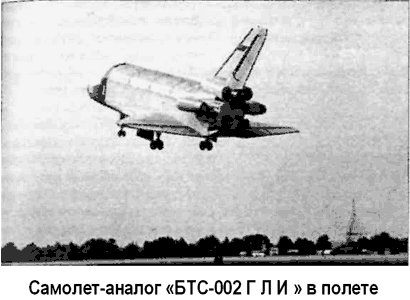

Атмосферный аналог «БТС-002 ГЛИ»
При создании «Бурана» особое внимание уделялось наземной экспериментальной отработке. Разработанная комплексная программа наземных испытаний охватывала весь объем отработки, начиная от узлов и приборов и кончая кораблем в целом. Предусматривалось создание около сотни экспериментальных установок, семь комплексных моделирующих стендов, пять летающих лабораторий и шесть полноразмерных макетов орбитальных кораблей.
Для отработки технологии сборки корабля, макетирования его систем и агрегатов, примерки с наземным технологическим оборудованием были созданы два полноразмерных макета корабля: «ОК-МЛ-1» и «ОК-МТ».
Первый — макетный экземпляр корабля «ОК-МЛ-1», основным назначением которого являлось проведение частотных испытаний как автономно, так и в сборке с ракетой-носителем, был доставлен на полигон в декабре 1983 года. Этот макет также использовался для проведения предварительных примерочных работ с оборудованием монтажно-испытательного корпуса, с оборудованием посадочного комплекса и универсального комплекса стенд-старт.
Макетный корабль «ОК-МТ» был доставлен на полигон в августе 1984 года для проведения конструкторского макетирования бортовых и наземных систем, примерки и отработки технологического оборудования, отработки плана подготовки к пуску и послеполетного обслуживания. С использованием этого изделия были проведены полный цикл примерок с технологическим оборудованием с монтажно-испытательным корпусом «Бурана», макетирование связей с ракетой-носителем, отработаны системы и оборудование монтажно-заправочного корпуса и стартового комплекса с заправкой и сливом компонентов объединенной двигательной установки.
Работы с изделиями «ОК-МЛ-1» и «ОК-МТ» обеспечили подготовку к пуску летного корабля без существенных замечаний.
Самая большая по объему и сложности экспериментальная отработка была проведена на комплексном стенде «КС-ОК» орбитального корабля «Буран». Основной особенностью, отличающей «КС-ОК» от других стендов, является то, что в его состав входили полноразмерный аналог орбитального корабля «Буран», укомплектованный штатными по составу бортовыми системами, и штатный комплект наземного испытательного оборудования.
На «КС-ОК» проводились: комплексная отработка взаимодействия бортовых систем при имитации штатных режимов работы и в расчетных нештатных ситуациях; проверка электрических связей аналога орбитального корабля «Буран», входящего в состав «КС-ОК», с эквивалентом ракеты-носителя «Энергия»; отработка режимов предстартовой подготовки и методики парирования нештатных ситуаций; отработка бортового и наземного (испытательного) программно-математического обеспечения и его сопряжения с аппаратными средствами вычислительных комплексов, бортовых систем и наземного испытательного оборудования с учетом возможных нештатных ситуаций; отработка эксплуатационной документации, предназначенной для проведения испытаний и наземной предполетной подготовки «Бурана»; проверка правильности выполнения доработок материальной части; обучение и тренировка специалистов, участвующих в наземной предполетной подготовке и натурных испытаниях орбитального корабля «Буран».
Анализ результатов экспериментальной отработки на «КС-ОК» позволил обосновать ряд технических решений о возможности сокращения объемов работ по наземной предполетной подготовке корабля «Буран» без снижения ее качества.
В зарубежной печати неоднократно сообщалось, что существовал атмосферный самолет-аналог «БТС-01», якобы предназначенный для совместного использования с самолетом-носителем «М-201М» (модернизированный вариант бомбардировщика «ЗМ» ОКБ имени Мясищева). «БТС-01» должен был располагаться на верхней внешней подвеске над фюзеляжем самолета-носителя и отделяться от него в полете с последующей самостоятельной посадкой. Приводились даже данные по испытательным полетам: «…экипаж аналога БТС-01 состоял из летчиков-космонавтов Евгения Хрунова и Георгия Шонина, самолет-носитель пилотировали Юрий Когулов и Петр Киев».
В реальности же аналог «БТС-001» использовался для наземных статических испытаний на прочность конструкции, после завершения которых на его основе был создан аттракцион в московском парке имени Горького.
Однако описанная схема с использованием самолета-носителя «ЗМ-Т» («Атлант») действительно применялась для транспортировки крупноразмерных агрегатов ракеты-носителя «Энергия» и орбитального корабля «Буран» с заводов-изготовителей на космодром Байконур.
Для атмосферных же испытаний был разработан специальный экземпляр орбитального корабля «БТС-002 ГЛИ» (заводское обозначение — «ОК-ГЛИ»), который оснащался штатными бортовыми системами и оборудованием, функционирующим на заключительном участке полета «Бурана».
Отличия в аэродинамической компоновке аналога «БТС-002 ГЛИ» от орбитального корабля «Буран» при полном соответствии массовых, центровочных и инерционных характеристик, в том числе и органов аэродинамического управления, заключались в установке четырех турбореактивных двигателей «АЛ-31» конструкции ОКБ имени Люльки с суммарной тягой в 40 тонн (два боковых двигателя были оснащены форсажными камерами) и удлиненной передней стойки шасси, обеспечившей заданный стояночный угол.
«БТС-002 ГЛИ» был построен в 1984 году и носил серийный номер «СССР-3501002». Габариты атмосферного корабля-аналога: длина — 36,4 метра, высота — 16,4 метра, размах крыла — 24 метров, объем кабины экипажа — 73 м3, максимальный взлетный вес — 92 тонны. Параметры полета: высота — 6000 метров, максимальная скорость — 600 км/ч, посадочная скорость — 300–330 км/ч.
Основные задачи летных испытаний с использованием аналога «БТС-002 ГЛИ» включали: отработку участка посадки в ручном и автоматическом режимах, проверку летно-технических характеристик на дозвуковых режимах полета, проверку устойчивости и управляемости, отработку системы управления при реализации в ней штатных алгоритмов посадки.
Испытания проводились в Летно-исследовательском институте Министерства авиапромышленности (город Жуковский). 10 ноября 1985 года состоялся первый полет корабля-аналога. Всего до апреля 1988 года было проведено 24 полета. Из них 17 полетов — в режиме автоматического управления до полного останова на взлетно-посадочной полосе. Общий налет «БТС-002 ГЛИ» составляет около 8 часов.

Первым летчиком-испытателем корабля-аналога «БТС-002 ГЛИ» был Игорь Волк, руководитель группы кандидатов в космонавты, готовившихся по программе «Буран». Кроме него, аналог пилотировали Римантас Станкявичюс, Александр Щукин, Иван Бачурин, Алексей Бородай и Анатолий Левченко.
Каждый испытательный полет состоял из следующих этапов: этапа разбега, взлета и набора высоты, которые выполнялись в режиме ручного пилотирования с автоматическим обеспечением устойчивости и управляемости; этапа испытательных режимов, проводимых для оценки характеристик устойчивости и управляемости на участке прямолинейного полета при постоянной скорости; этап разгона и торможения в горизонтальном полете, виражи с плавно нарастающей (до 2g) перегрузкой; этапы предпосадочного маневрирования, захода на посадку, посадки, пробега по взлетно-посадочной полосе и останова, на которых имитировались штатные профили снижения, посадки и останова орбитального корабля в ручном и автоматическом режимах.
Отработка участка посадки проводилась также на двух специально оборудованных летающих лабораториях, созданных на базе самолетов «Ту-154». Для выдачи заключения на первый пуск было выполнено 140 полетов, в том числе 69 — автоматических посадок. Полеты осуществлялись на аэродроме ЛИИ и посадочном комплексе Байконура.